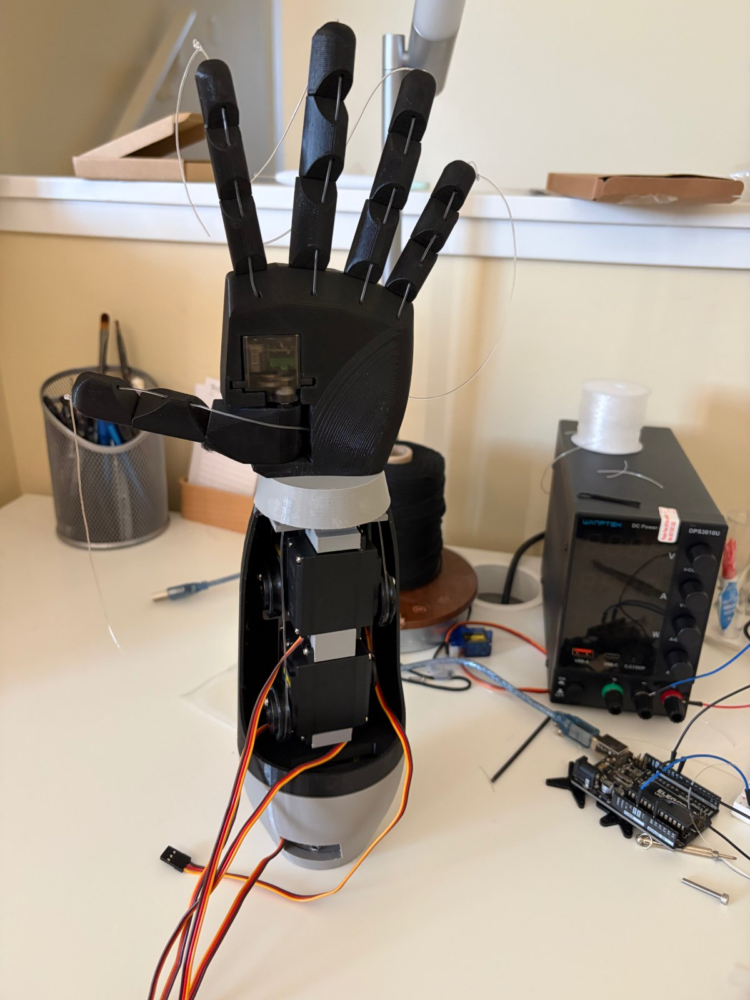
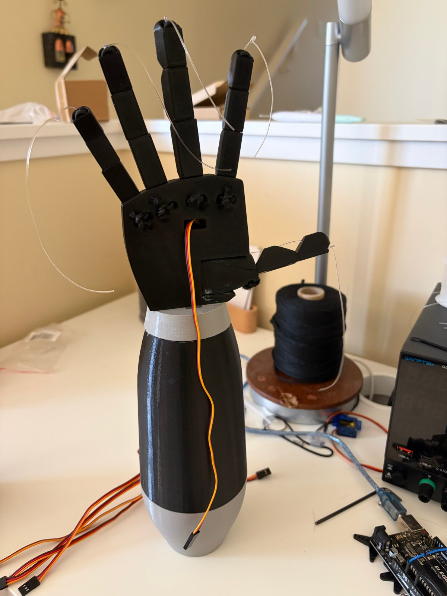
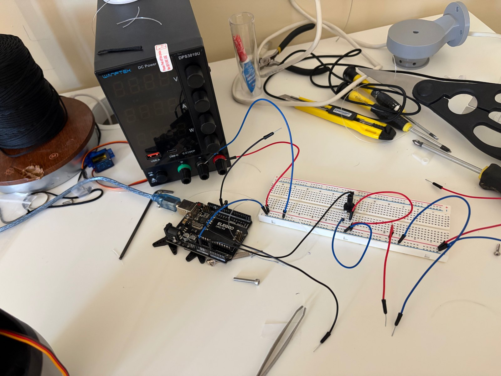
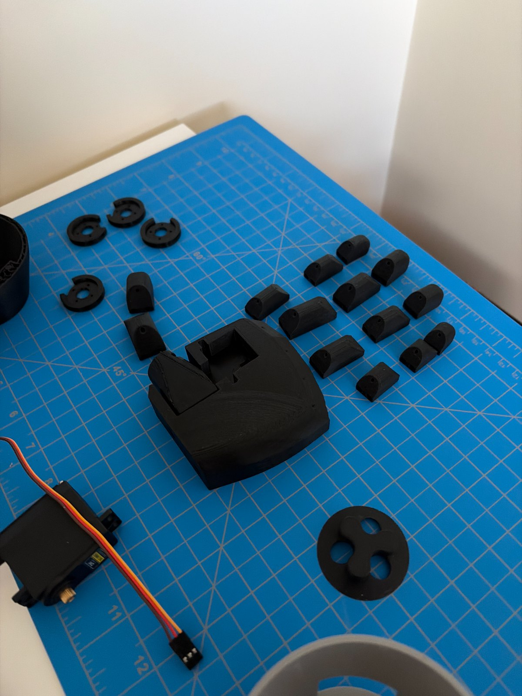

Tendon-Driven Robotic Hand
A five-finger robotic hand built to play rock paper scissors against a person. Assembled and strung, currently being brought up.
Why I built it
Most robotic hand projects mirror a human hand in real time. The hand copies you, so the interesting decision is still being made by the person.
I wanted the hand to decide. Rock paper scissors is the smallest problem that forces that: three poses, a fixed base, and a machine that has to choose its own move and be right more often than chance.
What I did
Repackaged the forearm for five independent fingers. The open-source hand I started from ties the ring and pinky to a single servo, which permanently caps it at four controllable fingers. I reworked the forearm in SolidWorks to fit a fifth servo, so every finger gets its own tendon and its own actuator. Rock paper scissors only needs three poses, but I didn't want the hardware to be the reason the project stopped there.
Modelled the servo mounts and the base. The mounts are cut to my servos rather than the ones the source build uses, so each one seats on its own features with the tendon exit lined up to its horn. The base is my own: five servos pulling tendons put a reaction torque back into the whole assembly, and it has to be stiff enough that the hand stays planted instead of rocking every time the fingers close.
Built a dedicated servo power rail. The obvious approach is to run servos off the Arduino's 5 V pin. That works for hobby micro servos and fails here. Five MG996Rs draw roughly 1 A each running and up to 2.5 A stalled, about 5 A total, far past what the Arduino's regulator can source. The servos run off their own current-limited 6 V rail, tied to the Arduino by a single ground jumper and nothing else, so a wiring mistake trips the supply instead of destroying a servo.
The decision that shaped the project
There are two ways to build an unbeatable rock paper scissors machine. One is to react: watch the hand as it forms and counter faster than the person can perceive, the way the University of Tokyo's Janken robot wins, which needs a high speed camera and fast actuators. The other is to predict: model the person's pattern from past rounds and commit before they throw.
I ran the latency budget for reacting on my hardware:
webcam frame at 30 fps ~33 ms
MediaPipe inference on a Pi ~20 to 50 ms
MG996R travel, 90° at 0.17 s/60° ~250 ms
-----------
~300 ms+
A human commits their throw somewhere around 200 to 400 ms after the last beat, and servo travel alone eats most of that. Reacting is not achievable with these actuators.
Predicting removes the constraint. The hand commits during the countdown, so latency stops mattering and the servos have the whole count to reach position. It also gives the project a number: random play wins 33 % of rounds, so anything measurably above that is a result.
Choosing the architecture my actuators could actually support, instead of the one that sounds more impressive, decided the entire software design.
The plan is to log each round as three fields: what I threw, what the person threw, and the outcome. Over enough rounds that history exposes bias, most people are not random, they favor certain throws after a win or a loss, and a simple model trained on that log can pick up the pattern and counter whatever they're statistically most likely to throw next.
Where I'm at
The hand is built and every tendon is strung, five fingers, five servos, ready to move. Right now I'm solving the last problem before it actually works: getting enough power to all five servos when they move at the same time. A breadboard is fine for testing one servo, but it can't handle five pulling power together, so I'm moving that connection onto thicker wire and a solid terminal block, with a capacitor across the line to smooth out the power spike when several fingers move at once.
Once that's sorted, every servo holds its pose reliably and the project moves to software.
What's next
- 01All five servos holding rock, paper and scissors on command
- 02Arduino and camera, MediaPipe 21-point hand landmark tracking, gesture classified by counting extended fingers
- 03Serial link from Pi to Arduino, full round loop with a countdown
- 04Move prediction from logged rounds, then a measured win rate over 100+ games



